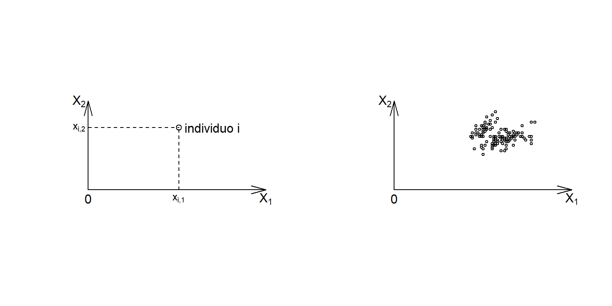

PCA SetUp
1
Dati multidimensionali
1.1
Rappresentazione matriciale e geometrica
Dispense sull’analisi delle componenti principali
Capitolo 1
Dati multidimensionali
1.1
Rappresentazione matriciale e geometrica
